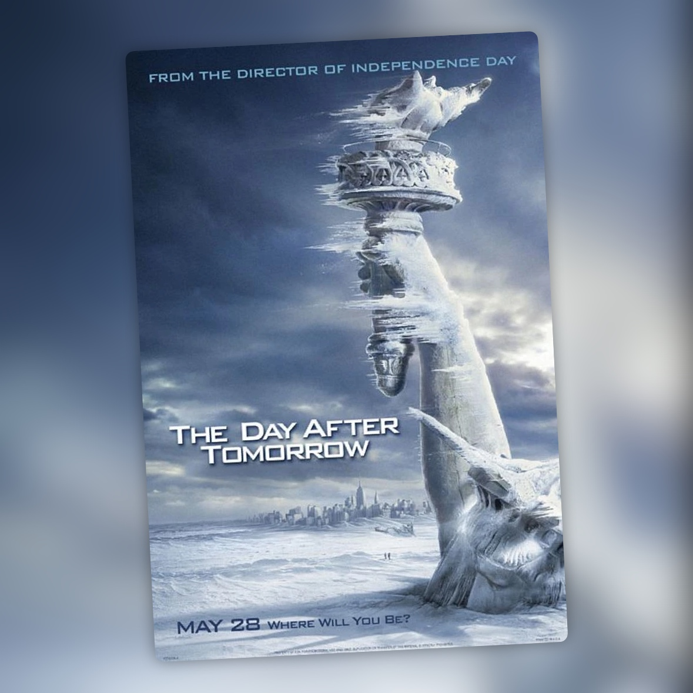

El día de mañana (2004)
El apocalipsis climático de Emmerich, disfrutable en modo sofá y manta

El día de mañana atrapa desde el minuto uno a base de caos climático puro y efectos especiales de los que te dejan pegado al sofá. Tsunamis, tormentas de hielo, huracanes gigantes: el fin del mundo versión Hollywood, servido en bandeja para una tarde tranquila, con manta y palomitas de por medio. Deja bastante claro desde el principio a lo que viene.
El guion va sobre raíles de principio a fin, sin sorpresas ni giros que se salgan de lo esperable dentro del género de catástrofes. Los diálogos son básicos, funcionales, ahí para llevarte de una escena de destrucción a la siguiente. Y los personajes hacen exactamente lo que tienen que hacer: Dennis Quaid de científico héroe que avisa de lo que viene y al que nadie escucha, Jake Gyllenhaal con su drama adolescente atrapado en Nueva York, y poco más que rascar en ninguno de los dos.
Tampoco esperaba encontrar mucha profundidad en una película que tiene tan claro a lo que viene. Aquí lo que manda es el espectáculo: ver Nueva York sepultada bajo el hielo, olas gigantes tragándose la ciudad y la naturaleza entera desatada contra la humanidad. Todo eso está rodado a lo grande, y es lo mejor que tiene la película. El problema aparece cuando intenta parar a respirar y contarte algo sobre sus personajes, porque ahí tiene bastante menos que ofrecer.
Si lo que buscas es pasar el rato con algo apocalíptico, aquí lo tienes. Es entretenimiento fácil, de los que ves sin pensar demasiado mientras estás en el sofá. Pero si empiezas a mirar el guion con un poco más de atención, se le ven todas las costuras.
Para una tarde de sofá y manta, me vale.
Ficha técnica
- Título original: The Day After Tomorrow
- Dirigida por: Roland Emmerich
- Guion: Roland Emmerich, Jeffrey Nachmanoff
- Reparto principal: Dennis Quaid, Jake Gyllenhaal, Emmy Rossum, Ian Holm, Sela Ward
- Año: 2004
- Duración: 124 min
- Dónde verla: Disney+